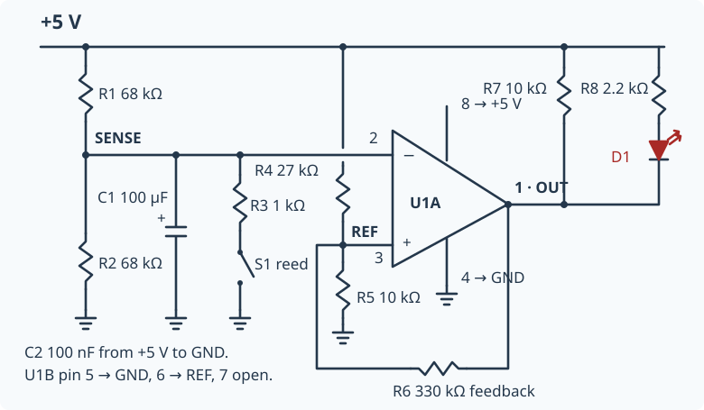

Build a door-left-open indicator on breadboard
Turn the switch, capacitor and comparator drills into a 5 V indicator for a cupboard or electronics cabinet. Open the door briefly and the light stays off. Leave it open for a few seconds and it lights.
Get the parts for this route
The same parts serve P184–P187. You can use a jumper in place of the magnet contact for the first build. Check price, stock and delivery before buying. Bring a multimeter with probes, a timer and small cutters for jumper wire. View the meter · Anselm Schüler, CC BY-SA 4.0.


| Quantity and part | What to choose | Australia | India |
|---|---|---|---|
| 1 · TI LM393P View photo | Through-hole PDIP-8, 7.62 mm between pin rows. The finished board uses an 8-pin socket. | Jaycar ZL3393, verify the PDIP package | Robu TI LM393P · ₹28 listed |
| 8 · Axial resistors View photo | 2 × 68 kΩ, 2 × 10 kΩ, and one each of 1 kΩ, 2.2 kΩ, 27 kΩ and 330 kΩ. ¼ W or higher, ±5% or better. Buy a spare 10 kΩ for the divider test if you want to leave it built. David Ludovino · CC BY-SA 3.0, resized. | element14 Australia · Axial resistors | element14 India · Axial resistors |
| 2 · Capacitors View photo | C1 Panasonic EEUFR1A101, 100 µF 10 V or equivalent with specified leakage at most 10 µA after conditioning. C2 100 nF ceramic ≥25 V, nonpolar. | element14 Australia · C1 | element14 India · C1 |
| 1 · Red LED View photo | 3 or 5 mm, two leads, high efficiency so it is visible at about 1–2 mA. Elmepi · CC BY 2.0. | Jaycar ZD0152 | QuartzComponents · Red LED |
| 1 · Two-piece wired magnetic contact View photo | Choose the version that reads below 2 Ω with the magnet close and open with it far away. Use that measured behaviour to choose, since alarm vendors label contact states differently. | Jaycar LA5072 | Robu Sentek wired contacts · check the form |
| 1 each · Breadboard and power source View photo | 830-point breadboard, 15 male-to-male jumpers, regulated 5 V USB-A supply with a labelled +5 V/GND breakout or a current-limited 5 V bench supply. Evan-Amos · public domain, resized. | Core Electronics BB830 | RoboticsDNA · MB102 |


Watch. Watch the output respond as the input crosses the reference. The demonstration senses sound. The LM393 here senses the timed door contact. Afrotechmods · Comparator tutorial & clapper circuit.
Complete the breadboard


- Build the two 68 kΩ divider, add the capacitor and 1 kΩ reset path, then finish the LM393 pin connections. Start with the reset jumper in. The 330 kΩ feedback path stays fitted for the finished circuit.
- Test the loose reed contact with the meter in continuity mode before wiring it. Bring the two halves together and get a stable beep. Move the magnet away and verify an open reading. If it has three wires, pick the pair that matches these observations.
- Unplug the 5 V supply. Remove the jumper between a21 and GND. Connect one reed wire to a21 and the other to GND. Keep the 1 kΩ between the contact and the capacitor. Keep the loose ends insulated so they cannot reach +5 V.
- Tape the contact to a cardboard frame and the magnet to a cardboard flap. Start with the mating faces lined up and about 3–5 mm apart with the flap shut, or within the supplier’s specified operating gap. Open the flap until the meter reliably shows an open contact. Mount the real parts only after this dry run.
- Apply 5 V. Set the meter to DC volts and keep black on GND. Open and shut the flap from the same starting position. Time from the moment the contact opens. Record the results below before moving to the PCB.
Check your build without guessing
| Test | Probe position or action | Expected result |
|---|---|---|
| Supply | Red on pin 8 supply, black on pin 4 GND | 4.75–5.25 V |
| Door closed for at least 2 s | C1 positive lead c16; then OUT d15 | SENSE below 0.15 V, OUT within 0.2 V of supply, LED dark |
| Open briefly and close | Under 1 s open | LED stays dark |
| Leave open | Measure SENSE and OUT after the LED lights | LED lights in 1.5–8 s, OUT below 0.4 V, SENSE climbs to at least 1.8 V by 20 s |
| Close again | Observe LED | LED off within 1 s, then SENSE below 0.15 V |
| Repeatability | Repeat full checks five times | All five cycles give the same sequence |
Opening the door opens the reed contact. The 100 µF capacitor charges towards half the supply through the divider. At about 1.43 V the comparator switches the LED on. Expect roughly three seconds with nominal parts. The check allows for resistor tolerance and electrolytic capacitance and leakage. Closing the door drains the capacitor quickly through the 1 kΩ and reed. Near 1.32 V the chip releases its output and the LED goes out. If the cable is disconnected while powered, the circuit behaves like an open door.
LED never goes off. Check if SENSE falls when you bring the magnet closer. With power off, verify the reed pair and the wire to a21. LED never goes on. Check whether SENSE rises past REF. If it stops below 1.8 V after 20 seconds, test the contact for a short, check C1 orientation and try a known-good capacitor. LED goes on immediately. Check C1 placement and GND continuity.
This is a workshop reminder circuit with calculated acceptance checks. The photographs show identified reference parts. The complete board still needs a physical bench test.
Next · Solder the same door indicator on a PCB